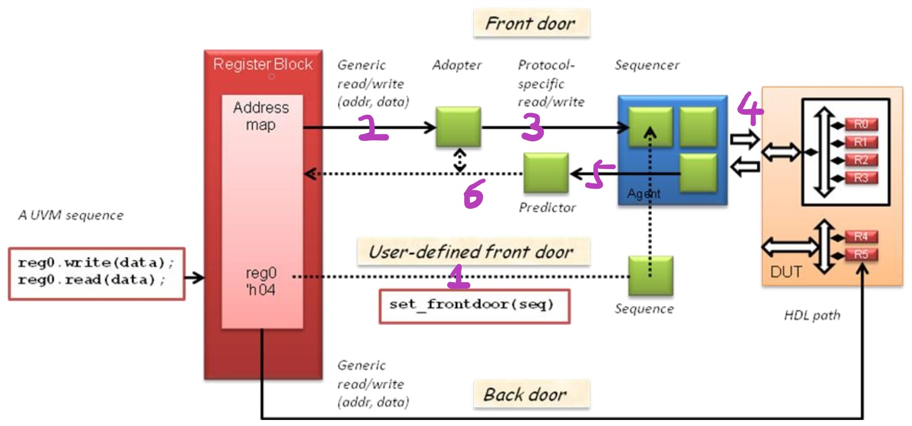

1. 简述
uvm register model(简称RAL)的创建是比较标准的一套流程，这里不再赘述。简单地提一下RAL本身是一个uvm_reg_block类型。uvm_reg_block可以看做是整个register file的一个分区，一个RAL至少有一个分区。
在uvm环境中，与RAL相关的组件可以大致分为三部分:
- RAL本身
- 用于监测和转换的组件: adapter, predictor
- 信号接口驱动组件: agent
2. 组件整合描述

Register Block(RAL)
Register Block(RAL)本身的作用就是将静态类型的RTL转换成一个动态类型的对象, 从而使得运行代码可以方便对其进行访问和操作。那么它和RTL就一定会有一个实时的自动复制+转换机制, 这个就是adapter和predictor干的活。
换句话说, 一旦建立好了有效的RAL。所有验证代码上的操作基本都是针对RAL进行的。RTL被透明化了，其代言人就是RAL。
Adapter
Adapter的工作主要是翻译。在reg_bus_op与uvm_sequence_item之间进行翻译，即把两个类型的信息进行传递。
Predictor
Adapter的工作主要是更新。更新RAL从而使得RAL与RTL中的register file内容同步。
Agent
与正常的Agent没区别，包含driver，monitor和sequencer。
3. 工作过程分析
我们先从目的入手，看看RAL到底要做什么。RAL的目的是模拟RTL中的register file, 对register file的操作无非是读和写两种。那就是说RAL要模拟register file的读写效果。这里我们主要分析前门操作。前门操作中所有的读写都是通过DUT的信号接口进行的，这个接口可以是APB，SPI，I2C等等。方便起见，以APB为例。
apb_agent.driver会发送apb的transaction到APB总线上。DUT作为slave会进行信号处理。而apb的transaction是由apb_agent.sequencer启动的。要想启动sequencer又需要有相应apb transaction类型的sequence来实现。这整个流程就是uvm中标准的一套sequence -> transcation -> sequencer -> driver -> interface -> DUT 的流程。只不过这套流程最终的作用点是DUT中的register file。
RAL在这套流程中扮演什么角色？本质上来说，有没有RAL对流程本身没有任何影响。RAL的角色更像是一个辅助器件，去把register file的内容映射出来，来方便验证工作。为了方便化，对RAL的基本要求有两个:
- 可以在验证环境中方便地产生对RTL register file的读写激励。
- 可以实时的反应RTL register file的真实内容。
对于要求1，uvm register model提供了两个通用的访问API: uvm_reg.read()和uvm_reg.write()。但问题是API怎么把激励通过前门送进RTL register file的?
说到这里不得不提一下能够改变register file的几种方式:
- 通过总线接口
- RTL内部自己改变
要想把激励送进DUT，只能经过APB总线，也就是方式1。 那么RAL的访问API必须和agent挂上钩，更具体的，必须和agent.sequencer挂上钩，并且还要能攒出来相应的sequence向agent.sequencer发送apb transaction。也就是说，通过RAL产生的激励会在标准流程前加一个过程，这个过程用于在RTL中攒出产生sequence。
那么改变register file的几种方式可以变为:
- (1)通过正常sequence->总线接口 (2)RAL read()/write() -> 总线接口
- RTL内部自己改变
uvm中RAL read()/write()过程是通过适配器模式(adapter pattern)实现的。uvm register model定义了一个自身不变的transaction类:reg_bus_op。通过adapter类的翻译功能将reg_bus_op转换到sequencer会用到的uvm_sequence_item类。用户要自己实现Adapter中reg2bus()与bus2reg()两个翻译函数。reg2bus()用于write()的激励产生, bus2reg()用于read()的读取操作。
到此我们可以看到，为了完成RAL的write()操作，我们需要向RAL提供两个组件，adapter和ageng.sequencer。提供这两个组件的是需要调用uvm_reg_map.set_sequencer(agent.squencer, adapter)函数。
这里有个后话，set_sequencer(agent.squencer, adapter)函数和uvm_seq_item类中的set_sequencer(squencer)同名，且都是为了传递对象句柄。只不过多了一个adapter类。所以其实更名为set_sequencer_and_adapter()或许更加贴切。估计是历史原因造成的同名。
为了完成read()操作，我们类似地可以由RAL产生读激励，并通过bus2reg()函数来翻译由driver返回的response。
4. 更新过程
上面已经描述了RAL作为前门激励产生的操作过程。下面具体看一下RAL的第二个基本要求:可以实时的反应RTL register file的真实内容。
这个要求的本质就是要同步RTL register file和RAL。那首先就要知道register file什么时候会变、
上面讲过，改变register file的几种方式为:
- (1)通过正常sequence->总线接口 (2)RAL read()/write() -> 总线接口
- RTL内部自己改变
对于1.(2)，激励源已经是RAL了，我们知道RAL会发送什么，也知道RAL得到了什么。
但对于1.(1)，激励源不是RAL，我们不知道总线上发生了什么，很有可能有另外一个sequence源要更新register file的值，而RAL会在此时错过这个环节。
对于2，register file的变化对RAL完全隐蔽，前门总线上根本看不到任何东西。仅仅通过前门操作，RAL是无法监测到RTL内部更新的。
predictor就是将前门总线上的所有操作都收集起来并通知RAL做出相应的更新。这样以来所有经过前门总线的操作都会独立地反应在RAL里。
但predictor本身并没有总线的检测功能，而只有对RAL的通知功能，所以predictor要借助agent.monitor来进行transcation收集。并借助Adapter来完成uvm_\seq_item到reg_bus_op的转换。这也是为什么predictor中会有adapter句柄和bus_in这样一个analysis_imp类型的接口。
针对于前门操作的的两种情况，uvm定义了三种更新模式:
- auto_prediction模式
- explicit prediction 模式
- passive prediction模式
2和3在predictor的设置上没有区别，只有概念上的区别。
4.1. auto_prediction模式
如果读了uvm的源码，会发现此模式的如下特点:
- 这个模式没有通过predictor对RAL进行更新。
- 这个模式只在write(frontdoor) 和 read(frontdoor) 的时候才会用predict()进行更新，且由于此时激励源是RAL，无须通过前门总线检测transaction。
4.2 explicit prediction 模式 和 passive prediction模式 — 跟着BUS上的活动进行更新
当没用到auto_predicton模式时，
这两个模式会用到predictor这个组件。predictor会利用monitor在BUS上观察到的信息来更新register model.
explicit prediction模式和passive prediction模式就predictor的更新层面来说，完全没有区别。唯一的区别在于RAL的激励应用上。
其实类似于agent的active模式。
- explicit prediction 模式中，RAL会扮演激励产生的角色。
- passive prediction模式中,，RAL不会扮演激励产生的角色，只是被动地进行更新。